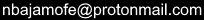

Frequently Asked Questions
Q: Hold on a second... I love NBA JAM. Is this real?!
A: Yes. It's real, it's free, and it's spectacular.
Q: Is this a new game created by EA?
A: No, this is not a new game by EA. This is a mod of NBA JAM: On Fire Edition. You should own the original NBA JAM: On Fire Edition if you want to play this game.
Q: How can I pay you or donate to this project?
A: This project is entirely and strictly free. There is no Patreon or GoFundMe or PayPal. You cannot send me money for this project. Please just enjoy it :)
Q: How long did it take to make this?
A:
Took a long time, many hours.
Q: Can you make a mobile/Android version?
A: No. I have no interest in the NBA JAM mobile game, and I will not be modding it.
Q: Can you make an Xbox 360 version?
A: No. While non-3D texture files are identical to the PS3 version, the 3D textures use a different file format (XPR instead of DDS). If I wanted to create Xbox 360 versions of my OFE projects, it would require a parallel workflow for texture creation. Unfortunately, that's a non-starter for me.
Q: I need help getting this game to run. Where should I go for troubleshooting help?
A: I recommend posting in the project's thread on the NLSC forum (nba-live.com). That way, other people with the same questions/problems will be able to see the conversation.
Q: How can I play this online?
A: This game is not playable on PSN. I recommend using Parsec to play online.
Q: I found something wrong with the game. How can I report it to you?
A: Before contacting me, PLEASE read the entire release notes document. You can report bugs by emailing me () or posting in this project's thread on the NLSC forum (nba-live.com).
Q: Why have two of the main menu options been replaced with "----"?
A: These were online options that should not be used with this project. Playing on a real PS3 could get you banned if you try to play online, so I want to do everything I can to discourage people from trying. I haven't figured out how to remove main menu options, so this is the best option I have come up with.
Q: Why are there players with no profile photo and zeroes for all ratings?
A: Blank players were added to teams with only two players. If a team only has two players, then you can't change which player you play as; player 1 will always be the player in the first slot and player 2 will always be the player in the second slot. By adding a blank player, you can change which player you play as.
Q: Why are the 3PT and STL ratings so low?
A: In an attempt to balance the gameplay, the 3PT and STL ratings have an artificial maximum value of 8.
Q: Why is Road Trip so hard? I can't get a win!
A: In all of my projects, Road Trip is for expert players looking for a challenge (or something close to a challenge). All the Road Trip matchups are set to the maximum difficulty ("Real AI"). I really didn't like how the original game's Road Trip was super easy when playing real NBA players, then got challenging when playing the fictional teams. Keep playing exhibition games and increase the difficulty when you start winning. You'll get better, and soon you'll be able to compete in Road Trip.
Q: How can I unlock the bonus teams and players if I'm not good enough to beat the computer on "Real AI" difficulty?
A: The game gives you a nice little bonus (~15,000 credits and a bump to level 10) if you have a save game file from the 2010 NBA JAM game on your PS3.